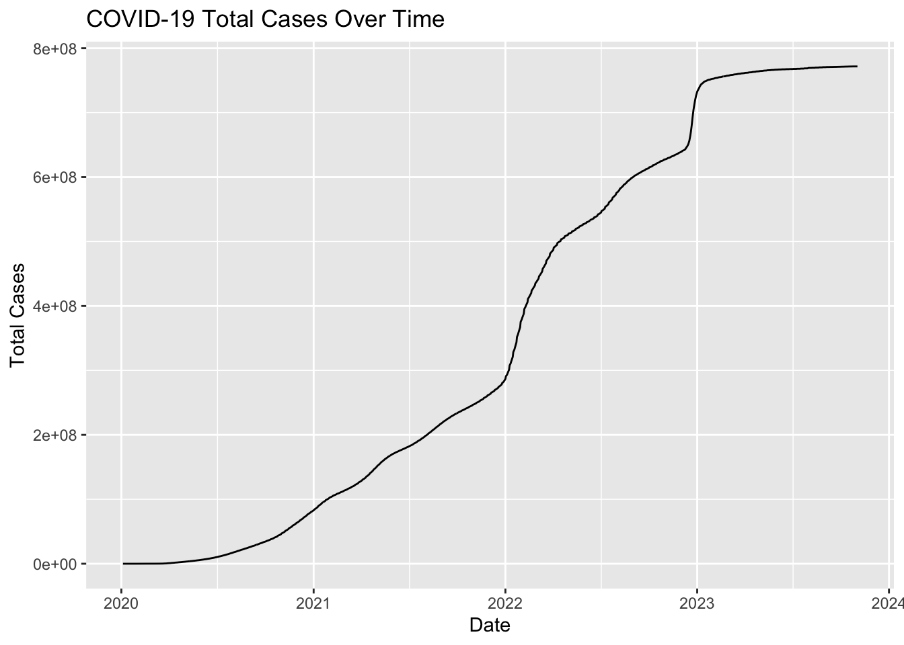
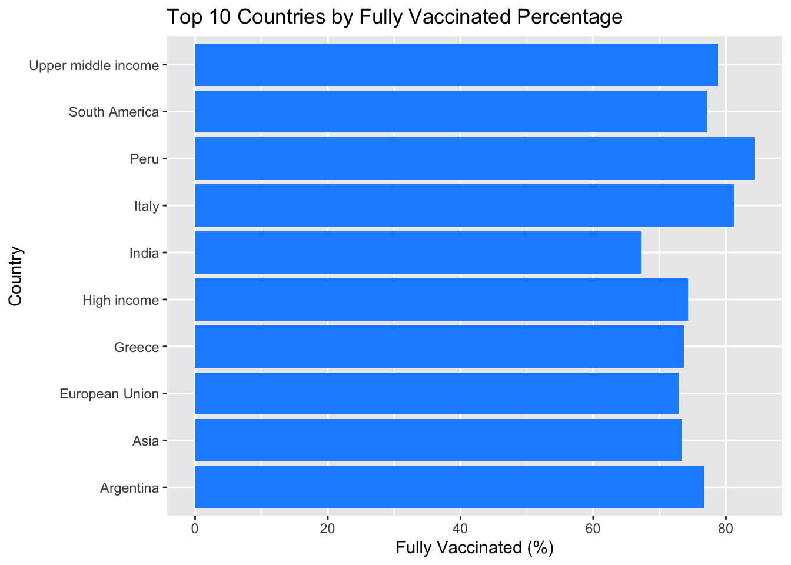

── Column specification ────────────────────────────────────────────────────────
Delimiter: ","
chr (4): iso_code, continent, location, tests_units
dbl (62): total_cases, new_cases, new_cases_smoothed, total_deaths, new_dea...
date (1): date
ℹ Use `spec()` to retrieve the full column specification for this data.
ℹ Specify the column types or set `show_col_types = FALSE` to quiet this message.
head(covid_data)
# A tibble: 6 × 67
iso_code continent location date total_cases new_cases
<chr> <chr> <chr> <date> <dbl> <dbl>
1 AFG Asia Afghanistan 2020-01-03 NA 0
2 AFG Asia Afghanistan 2020-01-04 NA 0
3 AFG Asia Afghanistan 2020-01-05 NA 0
4 AFG Asia Afghanistan 2020-01-06 NA 0
5 AFG Asia Afghanistan 2020-01-07 NA 0
6 AFG Asia Afghanistan 2020-01-08 NA 0
# ℹ 61 more variables: new_cases_smoothed <dbl>, total_deaths <dbl>,
# new_deaths <dbl>, new_deaths_smoothed <dbl>, total_cases_per_million <dbl>,
# new_cases_per_million <dbl>, new_cases_smoothed_per_million <dbl>,
# total_deaths_per_million <dbl>, new_deaths_per_million <dbl>,
# new_deaths_smoothed_per_million <dbl>, reproduction_rate <dbl>,
# icu_patients <dbl>, icu_patients_per_million <dbl>, hosp_patients <dbl>,
# hosp_patients_per_million <dbl>, weekly_icu_admissions <dbl>, …
We’ve loaded our COVID-19 dataset and this dataset contains information about COVID-19 cases, vaccinations, and more. Let’s take a quick look at the data to understand its structure. There are multiple different columns for instance the country, region, total number of deaths, number of vaccinated people, etc. This dataset possibly has everything everything we need to know and to analyze any COVID trends.
Before proceeding with our analysis, it’s crucial to clean the data by removing any missing or inconsistent values. Let’s start by checking for missing data and dealing with it.
## data cleaningmissing_data <- covid_data %>%select(date, location, total_cases) %>%filter(is.na(total_cases))# Remove rows with missing datacovid_data <- covid_data %>%filter(!is.na(total_cases))
We have identified and removed rows with missing data to ensure the dataset is clean for analysis. Now, let’s create some visualizations to better understand the COVID-19 cases. We’ll start with a line plot to visualize the total cases over time.
covid_data %>%filter(location =="World") %>%ggplot(aes(x = date, y = total_cases)) +geom_line() +labs(title ="COVID-19 Total Cases Over Time",x ="Date",y ="Total Cases")

As you can observe above, this line plot depicts the total number of cases in the world since 2020 and it has been increasing over time until 2023. The high peak we see is in the year 2021 which was also first the peak COVID year. And ever since then it has been in the upward trend. Additionally, since the numbers were really big hence we are seeing them in the logarithmic form so as to keep it concise. The plot is pretty intuitive and gives a good glimpse of COVID trend during the pandemic years.
covid_data %>%filter(date ==max(date)) %>%arrange(desc(people_fully_vaccinated_per_hundred)) %>%head(10) %>%ggplot(aes(x = location, y = people_fully_vaccinated_per_hundred)) +geom_bar(stat ="identity", fill ="dodgerblue") +coord_flip() +labs(title ="Top 10 Countries by Fully Vaccinated Percentage",x ="Country",y ="Fully Vaccinated (%)")

This visualization here is a bar depicting the countries against the percentage of population vaccinated. For instance, we can see that Peru had most of its population vaccinated and India had the least amount of its population vaccinated. This is a good chart to understand whether a country’s number of COVID cases correlated with their vaccination numbers or not. Additionally, it also provides a good idea of how well a country is doing in terms of providing healthcare services. However, one thing to note here is that these numbers/metrics can be a little deceiving as the size of India’s population is way larger than Italy, Peru etc. So, ideally we cannot really compare their progress but it is a visualization to understand.